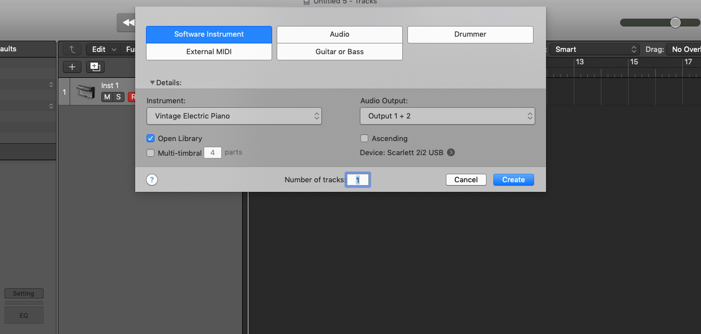

2. Trackpad
1) This part is trackpad!
2) Press '+' button (left-top side on the trackpad),,,You can choose Midi track, Audio track, Drum track...
2) Press '+' button (left-top side on the trackpad),,,You can choose Midi track, Audio track, Drum track...
1) You can choose Instrument, Audio, Drummer...
2) Click create button
2) Click create button

1) These are Tracks!

1) You can control volume
2) Mono the track('M' key)
3) Solo the track('S' key)
4) ('R' key) = when this part is on, you can play this track
if turned off --> you can't play instrument
5) 'L', 'R' You can control panning of the track
2) Mono the track('M' key)
3) Solo the track('S' key)
4) ('R' key) = when this part is on, you can play this track
if turned off --> you can't play instrument
5) 'L', 'R' You can control panning of the track

1) Set Snap as'Smart' on the right side of the trackpad
2) Set Dreg as 'No Overlap'
3) You can zoom of the trackpack through purple button
4) Shortcut Key = 'option' + 'drag' : To zoom updown side trackpad
5) Shortcut Key = 'shift' + 'option' + 'drag' : To zoom right left side trackpad
2) Set Dreg as 'No Overlap'
3) You can zoom of the trackpack through purple button
4) Shortcut Key = 'option' + 'drag' : To zoom updown side trackpad
5) Shortcut Key = 'shift' + 'option' + 'drag' : To zoom right left side trackpad
1) Now you can select instrument through this button!
2) You can select Bass, Guitar, Percussion...everything
3) Shortcut Key = alphabet 'Y'
2) You can select Bass, Guitar, Percussion...everything
3) Shortcut Key = alphabet 'Y'

1) Select bass part
2) Select any bass you want to try!
2) Now you can see bass on the track!!
2) Select any bass you want to try!
2) Now you can see bass on the track!!

1) You can create region on the track
2) Click left mouse button on the trackpad!!
3) Click Create empty midi region button
2) Click left mouse button on the trackpad!!
3) Click Create empty midi region button
1) Then green region will be created
2) Remember that this green part is region
3) Remember that every instrument zone you made is track
2) Remember that this green part is region
3) Remember that every instrument zone you made is track

1) To control region, drag at the end of the region
2) You can move the region from 1 section to any section or to any track.
2) You can move the region from 1 section to any section or to any track.

Press 'T' on the trackpad
You can see this tool bar and control the region
1) 'T' = basic select key
(You can control length of note, by dragging at the end of notes)
2) 'p' = you can draw any note in piano Roll
3) 'E' = Erase note
4) 'F' = Drag notes you want
('T' can do this function, so in my opinion you don't need to use this F key!)
5) 'I' = You can cut length of note
6) 'G' = Glue notes
7) 'M' = You can mute notes
8) 'Q' = Quantize notes
9) 'V' = You can contrl velocity of notes
10) 'M' = You can mute notes
11) 'W' = You can curve the automation
12) 'B' = You can draw notes continuously
13) I think 'T', 'P', 'I' key is the most important items.
You can see this tool bar and control the region
1) 'T' = basic select key
(You can control length of note, by dragging at the end of notes)
2) 'p' = you can draw any note in piano Roll
3) 'E' = Erase note
4) 'F' = Drag notes you want
('T' can do this function, so in my opinion you don't need to use this F key!)
5) 'I' = You can cut length of note
6) 'G' = Glue notes
7) 'M' = You can mute notes
8) 'Q' = Quantize notes
9) 'V' = You can contrl velocity of notes
10) 'M' = You can mute notes
11) 'W' = You can curve the automation
12) 'B' = You can draw notes continuously
13) I think 'T', 'P', 'I' key is the most important items.
1) You can loop the track by dragging this yellow part like this picture
2) And that rotation be chainged into yellow color
3) If you want to get rid of that loop then just click the yellow part or rotation buttion.
2) And that rotation be chainged into yellow color
3) If you want to get rid of that loop then just click the yellow part or rotation buttion.
1) Press Cmd + k button, this is piano
2) To play, press keyboard from A to Single quote.
3) To octave up, press 'x'
4) To octave down, press 'z'
5) To control velocity, press 'c', 'v'
6) Press Cmd + k button again, if you want to turn it off.
2) To play, press keyboard from A to Single quote.
3) To octave up, press 'x'
4) To octave down, press 'z'
5) To control velocity, press 'c', 'v'
6) Press Cmd + k button again, if you want to turn it off.
I want you to try every instruments!! not just bass!!
Now you can play piano, bass, guitar and every instrument in logic pro!!
So Easy right?